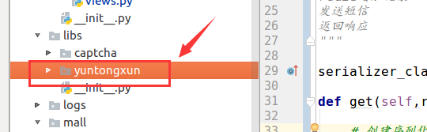

短信验证码
业务处理流程
- 检查图片验证码
- 检查是否在60s内有发送记录
- 生成短信验证码
- 保存短信验证码与发送记录
- 发送短信
后端接口设计：
访问方式： GET /verifications/smscodes/(?P<mobile>1[345789]\d{9})/?text=xxxx & image_code_id=xxxx
请求参数：
| 参数 | 类型 | 说明 |
|---|---|---|
| mobile | str | 手机号 |
| image_code_id | uuid字符串 | 图片验证码编号 |
| text | str | 用户输入的图片验证码 |
返回数据：
json
| 返回值 | 类型 | 说明 |
|---|---|---|
| message | str | OK，发送成功 |
导入发送短信第三方库yuntongxun到libs文件夹中

定义视图
from rest_framework.generics import GenericAPIView
from .serializers import RegisterSMSCodeSerializer
from django_redis import get_redis_connection
from rest_framework.response import Response
from rest_framework import status
from random import randint
from libs.yuntongxun.sms import CCP
class RegisterSMSCodeView(GenericAPIView):
"""
获取短信验证码
GET /verifications/smscodes/(?P<mobile>1[345789]\d{9})/?text=xxxx&image_code_id=xxxx
获取短信验证码,首先需要校验 验证码
思路:
创建序列化器,定义text 和 image_code_id
redis 判断该用户是否频繁获取
生成短信验证码
redis增加记录
发送短信
返回响应
"""
serializer_class = RegisterSMSCodeSerializer
def get(self,request,mobile):
# 创建序列化器, 定义text和image_code_id
serializer = self.get_serializer(data=request.query_params)
serializer.is_valid(raise_exception=True)
# redis
redis_conn = get_redis_connection('code')
# 判断该用户是否频繁获取
if redis_conn.get('sms_flag_%s'%mobile):
return Response(status=status.HTTP_429_TOO_MANY_REQUESTS)
# 生成短信验证码
sms_code = '%06d'%randint(0,999999)
# redis增加记录
redis_conn.setex('sms_%s'%mobile,5*60,sms_code)
redis_conn.setex('sms_flag_%s'%mobile,60,1)
# 发送短信
ccp = CCP()
ccp.send_template_sms(mobile,[sms_code,5],1)
# 返回响应
return Response({'message':'ok'})
定义序列化器，用以校验
from rest_framework import serializers
from django_redis import get_redis_connection
from redis.exceptions import RedisError
import logging
logger = logging.getLogger('meiduo')
class RegisterSMSCodeSerializer(serializers.Serializer):
"""
校验 验证码和image_code_id
"""
text = serializers.CharField(label='用户输入的验证码',max_length=4,min_length=4,required=True)
image_code_id = serializers.UUIDField(label='验证码唯一性id')
#我们需要用到这两个字段,所以在validate中进行判断
def validate(self, attrs):
#获取用户提交的验证码
text = attrs['text']
image_code_id = attrs['image_code_id']
#链接redis,获取redis中的验证码
redis_conn = get_redis_connection('code')
redis_text = redis_conn.get('img_%s'%image_code_id)
# 判断从redis中获取的验证码是否存在
if redis_text is None:
raise serializers.ValidationError('验证码已过期')
#将redis中的验证码删除
try:
redis_conn.delete('img_%s'%image_code_id)
except RedisError as e:
logger.error(e)
#对redis的验证码编码之后进行比对,要注意大小写问题
if redis_text.decode().lower() != text.lower():
raise serializers.ValidationError('验证码错误')
return attrs
注意:
1.要注意redis的值为bytes
2.进行校验时要调用lower(),来统一小写字母进行比较
前端Vue代码 js/register.js：
修改变量
data: {
...,
sending_flag: false,
sms_code_tip: '获取短信验证码',
error_image_code_message: '请填写图片验证码',
error_sms_code_message: '请填写短信验证码',
},
修改methods,添加发送短信的方法
//发送短信验证码
send_sms_code: function () {
if (this.sending_flag == true) {
return;
}
this.sending_flag = true;
// 校验参数，保证输入框有数据填写
this.check_phone();
this.check_image_code();
if (this.error_phone == true || this.error_image_code == true) {
this.sending_flag = false;
return;
}
// 向后端接口发送请求，让后端发送短信验证码
axios.get('http://127.0.0.1:8000'+'/verifications/smscodes/' + this.mobile + '/?text=' + this.image_code+'&image_code_id='+ this.image_code_id, {
// 向后端声明，请返回json数据
responseType: 'json'
})
.then(response => {
// 表示后端发送短信成功
// 倒计时60秒，60秒后允许用户再次点击发送短信验证码的按钮
var num = 60;
// 设置一个计时器
var t = setInterval(() => {
if (num == 1) {
// 如果计时器到最后, 清除计时器对象
clearInterval(t);
// 将点击获取验证码的按钮展示的文本回复成原始文本
this.sms_code_tip = '获取短信验证码';
// 将点击按钮的onclick事件函数恢复回去
this.sending_flag = false;
} else {
num -= 1;
// 展示倒计时信息
this.sms_code_tip = num + '秒';
}
}, 1000, 60)
})
.catch(error => {
if (error.response.status == 400) {
this.error_image_code_message = '图片验证码有误';
this.error_image_code = true;
} else {
console.log(error.response.data);
}
this.sending_flag = false;
})
}
前端Vue代码HTMl中 Register.html
修改短信验证码的li标签部分
<li>
<label>短信验证码:</label>
<input type="text" v-model="sms_code" @blur="check_sms_code" name="msg_code" id="msg_code" class="msg_input">
<a @click="send_sms_code" class="get_msg_code">{{ sms_code_tip }}</a>
<span v-show="error_sms_code" class="error_tip">{{ error_sms_code_message }}</span>
</li>